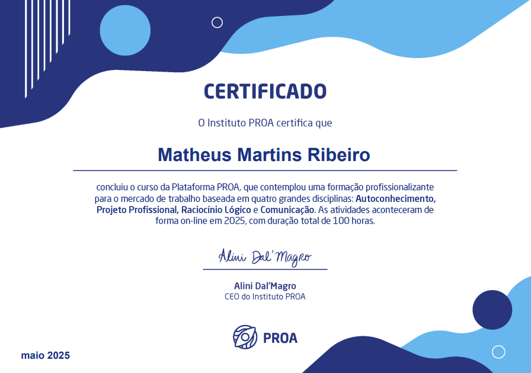
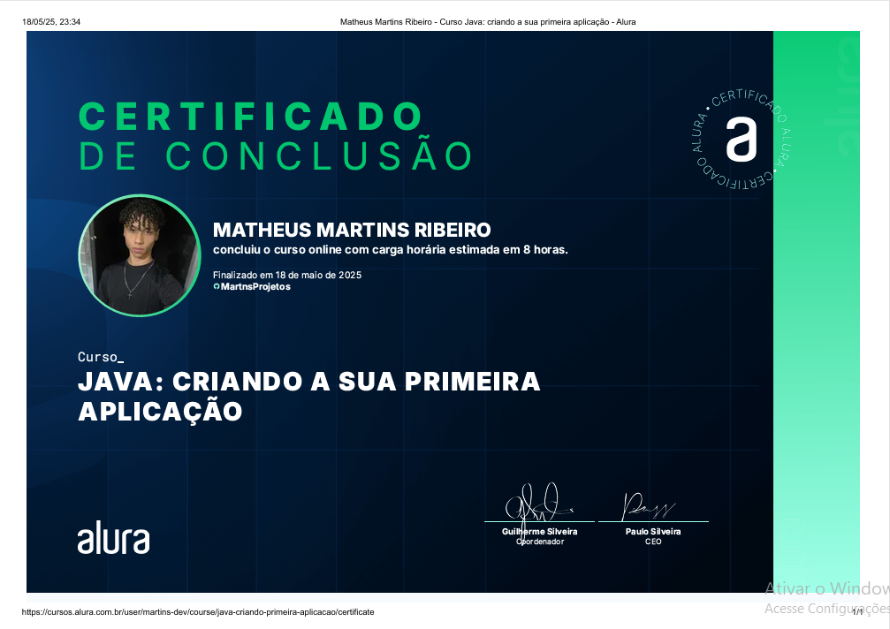
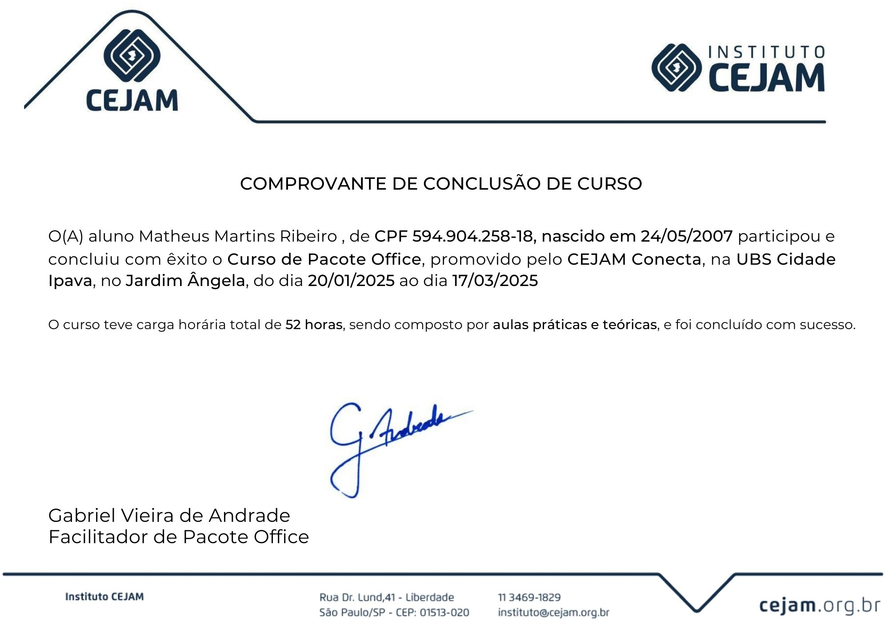
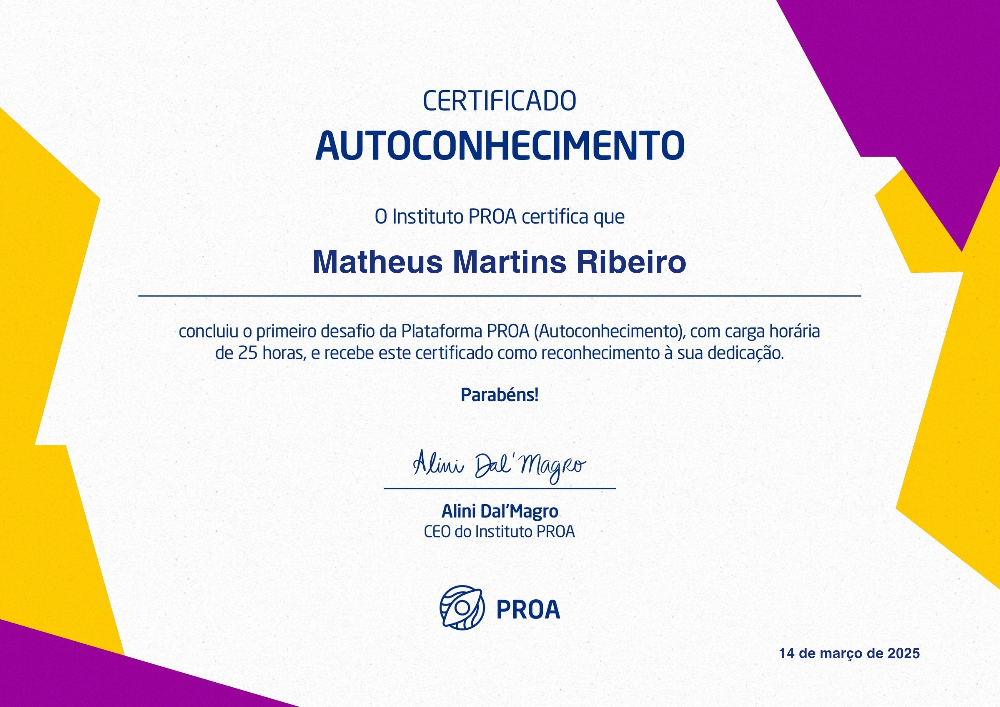

Destaques

Instituto PROA
Curso Profissionalizante - 21/01/25 até 18/05/25 (100H)Desenvolvi competências para o mercado de trabalho, como autoconhecimento, projeto profissional, raciocínio lógico e comunicação, Me preparando para os desafios da vida profissional.

Java
Alura - Carga Horária (8H)Completei um curso de Java onde aprendi a criar projetos no IntelliJ, controlar o fluxo com condicionais e loops, trabalhar com tipos de dados e utilizar o Scanner para leitura de entrada.

MySQL
Cursa - 16/04/25 até 08/05/25 (18H)Conhecimento em MySQL para modelagem, manipulação e consulta de bancos de dados relacionais, incluindo criação de tabelas, queries avançadas e otimização de desempenho.

Pacote Office Completo
Cejam Conecta - 20/01/25 até 26/03/25 (52H)Domínio completo do pacote Microsoft Office, incluindo Excel, Word, PowerPoint, Access e integração entre aplicativos.

JavaScript Avançado
IFMG - 30/01/25 até 19/02/25 (40H)Especialização em JavaScript ES6+, manipulação do DOM, frameworks modernos e desenvolvimento de aplicações web dinâmicas.

Autoconhecimento
PROA - 24/02/25 até 14/03/25 (25H)Ferramentas e técnicas para autoconhecimento, inteligência emocional e desenvolvimento de soft skills aplicados à vida pessoal e profissional.
.jpg)
Projeto Profissional PROA
PROA - 24/02/25 até 04/04/25 (25H)Desenvolvimento de habilidades profissionais e preparação para o mercado de trabalho com projetos práticos e mentoria personalizada.
lógica da Programação
Cursa - 12/05/2025 até 26/05/2025 (14H)Estudando lógica da programação online pelo Cursa, desenvolvendo habilidades fundamentais para resolução de problemas, algoritmos e raciocínio computacional.
.jpg)
Python
Santander Open - 08/03/25 (8H)Conhecimentos avançados em Python, incluindo bibliotecas para análise de dados, automação de processos e desenvolvimento web.

Inteligência Artificial
Santander Open - 09/03/25 (8H)Fundamentos de IA, machine learning, redes neurais e implementação de modelos preditivos para soluções de negócios.
Node.js
back-endDesenvolvimento de aplicações back-end com Node.js, criação de APIs RESTful, integração com bancos de dados, uso de Express e arquitetura orientada a eventos.